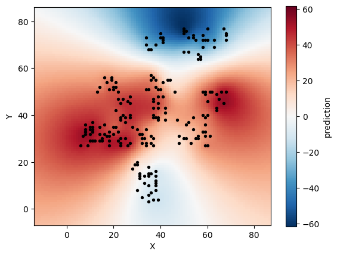

Prediction
After fitting, pyreml can predict random effects at levels of unit that were not observed in the training data, for instance spatial interpolation or genomic prediction. This is available for effects whose right-hand factor relates the levels to one another:
right_hand |
Prediction input |
|---|---|
str |
A known covariance over training and prediction levels. |
ar |
A known distance over training and prediction levels. |
Prediction on-the-fly
The random effects can be directly obtained from Henderson’s equations with the new levels included as dummy individuals: carrying no observation, they are tied to the observed levels solely through their correlation to the observed ones expressed in \(\mathbf{K_a}\).
Prediction error variance
All the random effects \(\hat{\mathbf{u}}\) included in the HMME come with a Prediction Error Variance (PEV). The PEV and their covariance \(\mathbf{P}\) are computed all together as:
\[ \mathbf{P} = \mathbf{G} - \mathbf{G}\mathbf{Z}^\top\mathbf{V}^{-1}\mathbf{Z}\mathbf{G} + \mathbf{G}\mathbf{Z}^\top\mathbf{V}^{-1}\mathbf{X} (\mathbf{X}^\top\mathbf{V}^{-1}\mathbf{X})^{-1} \mathbf{X}^\top\mathbf{V}^{-1}\mathbf{Z}\mathbf{G}. \]
The PEV is then exposed as model.random[i].PEV.
Kriging
Solving the HMME requires the inversion of \(\mathbf{G}\), hence implicitely \(\mathbf{K_a}\), which can bottleneck when the number of levels to predict upscales.
For this reason, pyreml provides a kriging approach that consists in the sole inversion of the \(\mathbf{K}_{train}\), the submatrix of \(\mathbf{K}_a\) that only encompasses the levels included in the training set (i.e. the observed levels):
\[ \hat{\mathbf{a}}_{\text{pred}} = \mathbf{K}_{\text{pred}}\,\mathbf{K}_{\text{train}}^{-1}\, \hat{\mathbf{a}}_{\text{train}}, \]
with \(\hat{\mathbf{a}}_{\text{pred}}\) the pure prediction of unobserved levels, \(\hat{\mathbf{a}}_{\text{train}}\) the prediction of the observed levels (usually predicted at the HMME step), and \(\mathbf{K}_{\text{pred}}\) the covariance between the observed and non-observed levels.
For str, \(\mathbf{K}_a\) is read from the supplied covariance; for ar, it is rebuilt from the supplied distance with the estimated decay, \((\mathbf{K}_a)_{ij} = \exp(-\hat{\rho}\, D_{ij})\).
Prediction by kriging is operated at the random effect level, using predict:
preds = model.random[0].predict(
matrix_index = full_index, # all levels: train + pred
covariance = K_full, # or: distance = D_full for "ar"
)matrix_index orders a complete covariance (or distance) over all levels, training and new; predict returns a long-format DataFrame with one row per (unit, response, component).
Illustration
Let’s realize the spatial analysis of the larix illustrative dataset using the kriging prediction module.
import numpy as np
import matplotlib.pyplot as plt
from pyreml import MixedModel, Random, larix as df
## prepare data
df = df[df["year"] == 2000].copy()
df["ID"] = np.arange(len(df))
## prepare distance matrix
coords = df[["X", "Y"]].to_numpy()
D_train = np.linalg.norm(
coords[:, None, :] - coords[None, :, :],
axis=-1
)
# fit the model
mod = MixedModel.from_dataframe(
data = df,
response = "height",
fixed = "1",
random = Random(
unit = "ID",
right_hand = "ar",
distance = D_train,
matrix_index = df["ID"].tolist(),
),
).fit()
# prepare kriging distance matrix
gx = np.arange(coords[:, 0].min()-20, coords[:, 0].max()+20)
gy = np.arange(coords[:, 1].min()-10, coords[:, 1].max()+10)
GX, GY = np.meshgrid(gx, gy)
grid = np.column_stack([GX.ravel(), GY.ravel()])
grid_ids = np.arange(len(df), len(df) + len(grid))
all_coords = np.vstack([coords, grid])
D_full = np.linalg.norm(all_coords[:, None, :] - all_coords[None, :, :], axis=-1)
# predict by kriging
pred = mod.random[0].predict(
matrix_index = df["ID"].tolist() + grid_ids.tolist(),
distance = D_full,
)
# plot the results
surface = pred["prediction"].to_numpy().reshape(GX.shape)
m = np.abs(surface).max()
plt.imshow(surface, origin="lower",
extent=[gx.min(), gx.max(), gy.min(), gy.max()],
aspect="equal", cmap="RdBu_r", vmin=-m, vmax=m)
plt.colorbar(label="prediction")
plt.scatter(df["X"], df["Y"], c="black", s=8)
plt.xlabel("X"); plt.ylabel("Y")
plt.show() This models the spatial effect throughout the whole experimental design:
